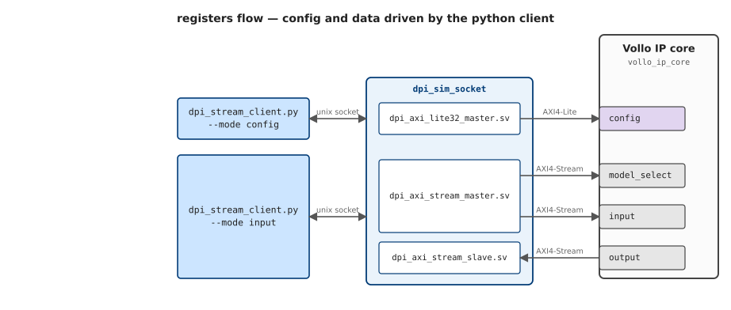
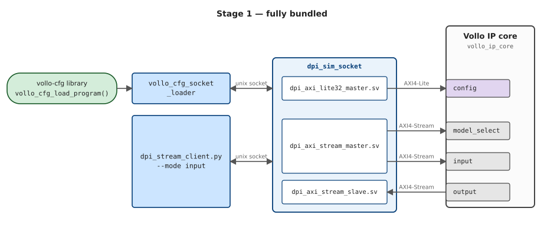
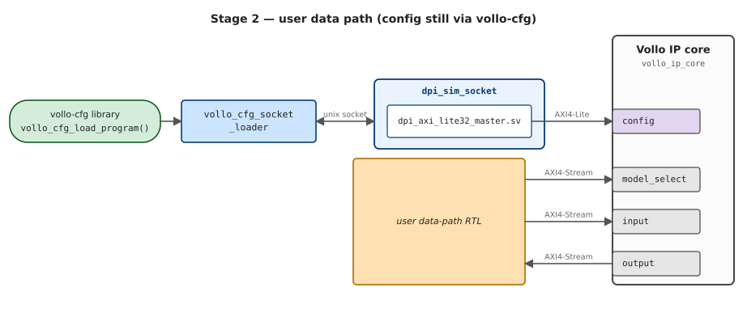
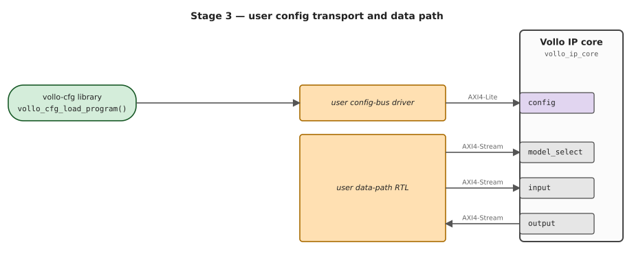

Simulation model
The Vollo IP simulation model (vollo-ip-sim) is a simulation-only stand-in for
the Vollo IP Core. It lets you bring up and test the host/RTL interfaces
(AXI4-Lite config + AXI4-Stream model-select / input / output) under AMD
XSim or Siemens QuestaSim/ModelSim, without hardware or a Vollo
license.
It is released alongside the SDK as a self-extracting vollo-ip-sim-<version>.run
archive, available from the GitHub Releases page. Running it
presents the EULA and unpacks a vollo-ip-sim-<version>/ directory containing the
model, the DPI driving code, and a run.sh entry point. See the bundle's own
README.md for unpacking and a quick start; this page is the full walk-through.
What it is
Every flow simulates rtl/vollo_ip_core.sv — the same wrapper top you
integrate, with the discovery registers and config window of the Vollo IP
Core. It provides two compute backends:
- stub — no compute. Each model is described by four config words (input size, output size, delay, enable); output beats carry synthetic metadata (beat index + model). Needs no libraries and is synthesizable.
- vm — runs an actual
.volloprogram through an embeddedvollo-rt, so the output is the true inference result. Needs the Vollo SDK.
The stream data width is BLOCK_SIZE * 16 bits; the released build uses
BLOCK_SIZE=32 (512-bit). As on the IP core, the input stream is plain
tvalid/tready/tdata (sizes come from config, not stream framing); the
output stream carries tkeep/tlast to mark the end of each packet and which
bytes are valid.
Requirements
- A SystemVerilog simulator, selected with
VOLLO_IP_SIMULATOR:vivado(default) — AMD Vivado/XSim. Either putxvlog/xelab/xsimonPATH, or setVIVADO_SETTINGS=/path/to/Vivado/settings64.sh.questa/modelsim— Siemens QuestaSim/ModelSim. Putvlog/vsimonPATHyourself (and any license env your install needs).
- A C compiler (
cc/gcc) andpython3. - For anything involving a
.volloprogram:VOLLO_SDKpointing at the unpackedvollo-sdk-*/directory. No flow needs a Vollo license.
The three flows
run.sh <flow> exposes three flows for running the simulation model
(./run.sh --help lists them with their options). They differ in who programs
the config bus and which compute backend runs:
- registers — the bundled python client writes the stub's per-model config
registers over DPI with explicit values. No
.vollorequired, nothing from the SDK touches the bus: good for bring-up, and as a reference for driving the stub if you can't hook up the DPI. - vollo-cfg — the
vollo-cfglibrary programs the bus withvollo_cfg_load_program, which works on all versions of the Vollo IP (hardware, stub and vm).
| Flow | Config programmed by | Compute | Needs | What it proves |
|---|---|---|---|---|
registers | python client (DPI) | stub | — | the host/RTL protocol end to end (synthetic output) |
vollo-cfg-stub | vollo-cfg library | stub | SDK | your config path, programmed by vollo-cfg |
vollo-cfg-vm | vollo-cfg library | vollo-rt | SDK | true, bit-accurate inference output |
registers takes its sizes from the command line (zero dependencies beyond a
simulator + C compiler + python3), or from a .vollo's metadata if you
pass one (which needs $VOLLO_SDK for vollo-tool). In every flow,
model-select and input data are driven over DPI by the python client.
# Zero-dependency: stub configured over DPI with explicit sizes.
./run.sh registers --input-size 64 --output-size 64
# Same, but the sizes come from a program's metadata (needs $VOLLO_SDK):
./run.sh registers path/to/program.vollo
# Config programmed by the vollo-cfg library; stub compute (needs $VOLLO_SDK):
./run.sh vollo-cfg-stub path/to/program.vollo
# Same library, vm compute: bit-accurate inference through vollo-rt (needs $VOLLO_SDK):
./run.sh vollo-cfg-vm --check-method identity path/to/program.vollo
The released build is BLOCK_SIZE=32, so use a matching b32 program (the SDK
ships example/identity_b32.vollo). Select the simulator with
VOLLO_IP_SIMULATOR (default vivado), e.g. to run the on-ramp under
QuestaSim:
VOLLO_IP_SIMULATOR=questa ./run.sh registers --input-size 64 --output-size 64
Each run prints its work directory and the simulator log, and exits non-zero
unless it sees All tests passed.. The work directory is kept either way, so
you can inspect the logs and the waveform afterwards; on failure the relevant
logs are also dumped to stderr. To choose its location (instead of a fresh temp
dir), set WORKDIR.
Architecture
vollo_ip_core has its config interface (config, AXI4-Lite) on one edge
and its data interfaces (model_select, input, output, AXI4-Stream) on
the other. Two things can program config: the vollo-cfg library
(vollo_cfg_load_program, same as on hardware), or the bundled python client
writing explicit register values (the registers flow). The data streams are
driven by the python client (--mode input), or by your own RTL once you
integrate.
In simulation, the host-side drivers don't touch the IP's buses directly: each
goes over a Unix socket into the simulator and through a DPI layer —
dpi_axi_lite32_master.sv / dpi_axi_stream_master.sv drive the IP's AXI buses.
That whole DPI layer is bundled scaffolding you don't ship; your own RTL drives
the IP's ports directly (stages 2–3 below).
In the diagrams, colour shows ownership: green is the vollo-cfg library
(the production Myrtle software), blue is bundled sim tooling (the host clients and
the dpi_sim_socket DPI layer), orange is user code — the parts you build. The
IP's own ports are neutral (purple = AXI4-Lite, grey = AXI4-Stream).
How the simulation is driven (DPI)
A small socket bridge (dpi/dpi_sim_socket.c) connects the SystemVerilog
testbench to host-side drivers over a Unix socket:
dpi/dpi_axi_lite32_master.svdrives the config AXI4-Lite bus.dpi/dpi_axi_stream_master.svdrives the model-select + input streams.dpi/dpi_axi_stream_slave.svcaptures the output stream and routes its beats back over the socket (the slave counterpart to the stream master).dpi/dpi_stream_client.pyis the host scenario runner (registers config + input + output checks); config writes go through the wrapper's config window at0x10_0000, like every other agent on the bus. It never reads a.volloitself — program loading isvollo-cfg's job, viadpi/vollo_cfg_socket_loader.c, the bridge that runs thevollo-cfglibrary against the simulated config bus.
The registers flow drives both buses straight from the python client over
this DPI layer — no .vollo, no SDK:

The vollo-cfg-stub / vollo-cfg-vm flows are the same, except config is
programmed by the vollo-cfg library instead of the python client — that's
stage 1 of the integration below.
Integration stages
The model lets you replace one piece at a time with your own; each stage swaps one block and leaves the rest in place.
1. Fully bundled

vollo-cfg (through vollo_cfg_socket_loader) programs config, and
dpi_stream_client.py --mode input drives the streams and checks output. This
is the vollo-cfg-stub / vollo-cfg-vm flows. (The zero-dependency registers
flow is the same picture with the python client driving config too, instead of
vollo-cfg.)
2. User data path

Connect your RTL to the model_select / input / output AXI4-Stream ports of
rtl/vollo_ip_core.sv and drop the python data client and the DPI stream
master/slave. Config is unchanged — still vollo-cfg via
vollo_cfg_socket_loader — so you can check your data path against the same
bit-accurate output.
3. User config transport

An optional final stage is to drive the config bus from your own mechanism
instead of vollo_cfg_socket_loader and the DPI lite master. This is still the
vollo-cfg library issuing the same vollo_cfg_load_program writes — only the
transport beneath it changes — so it matches your card config bus setup on
hardware.